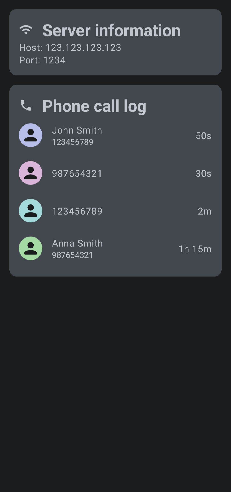
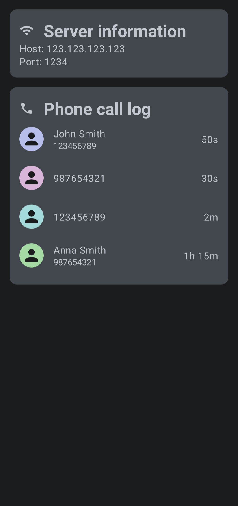

CallMonitor
Description
CallMonitor is an Android application that monitors incoming and outgoing calls and stores the details in phone call log in the background. At launch it also starts a REST API server that can be used to view the call log, current call status and server status. Beside of that the application provides a simple user interface to view the call log and the server configuration.
More detailed information about the application can be found here.
Screenshots

 
